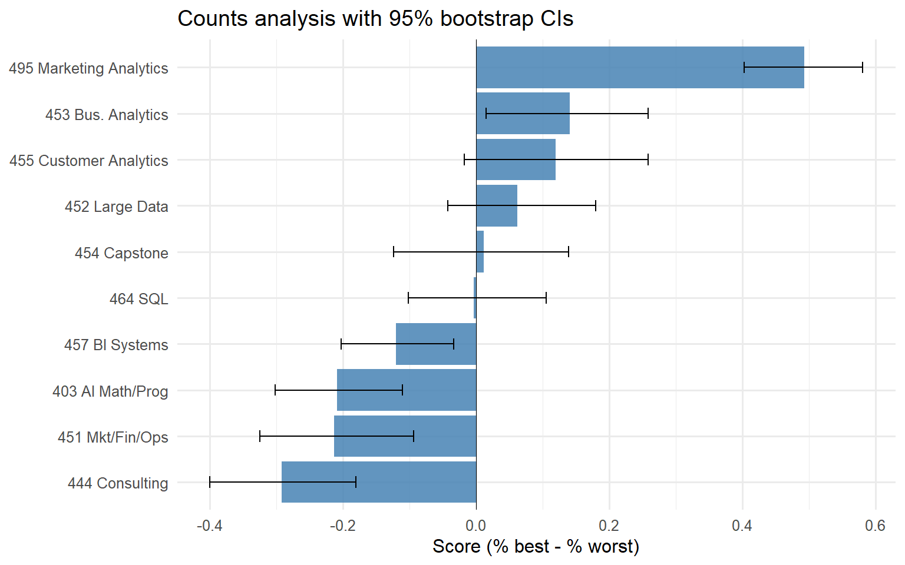
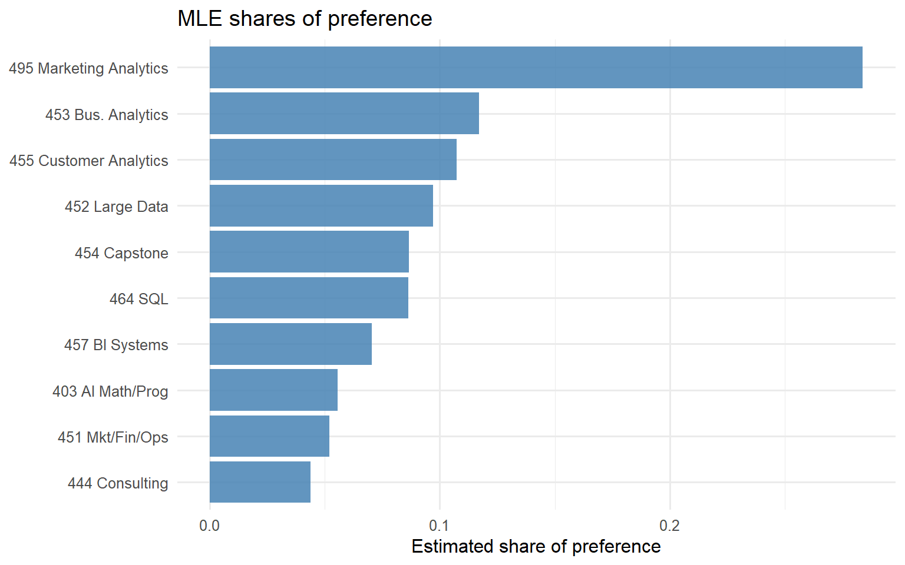
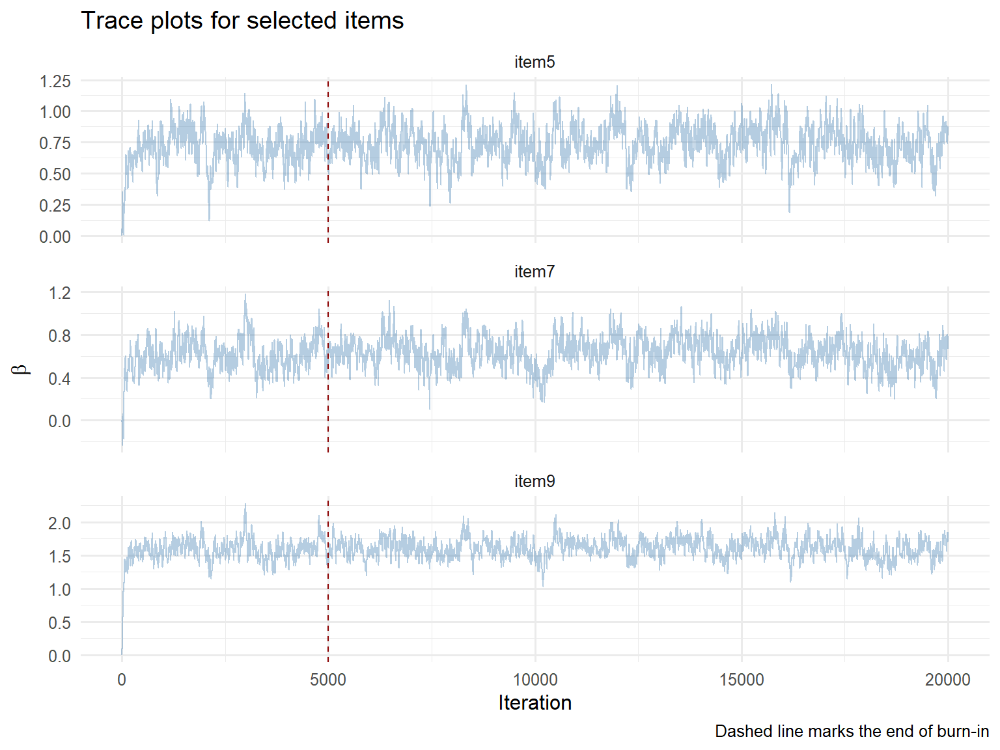
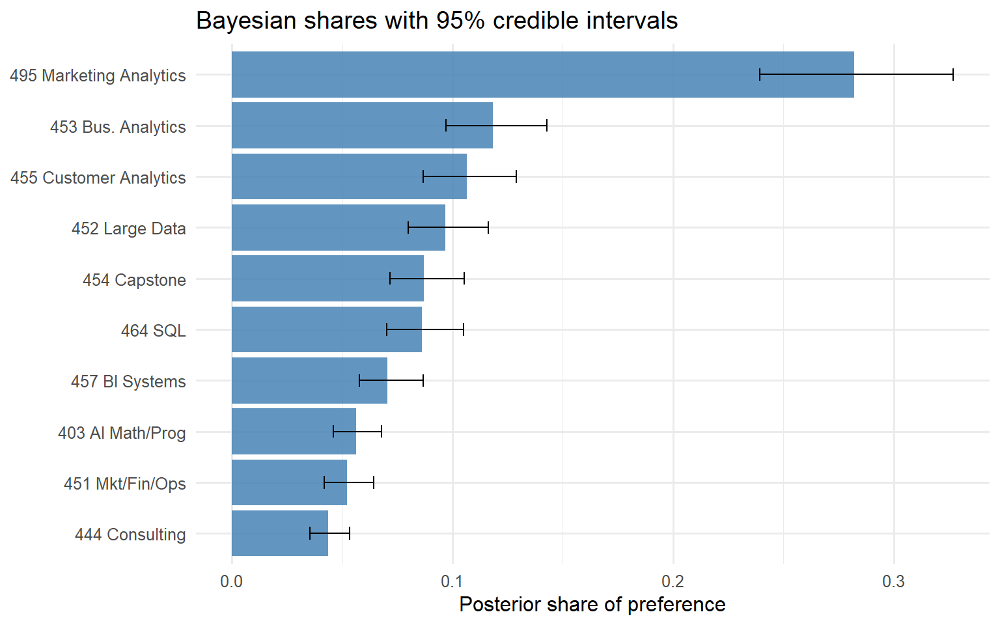
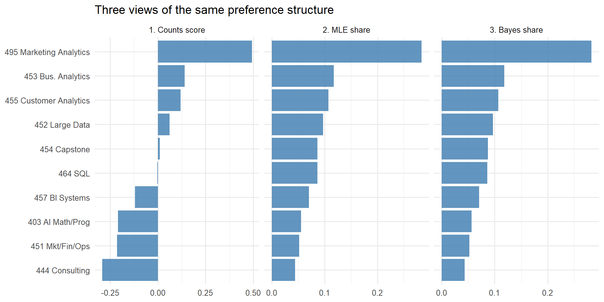

library(tidyverse)
library(knitr)
theme_set(theme_minimal(base_size = 12))Introduction
MaxDiff, or Best-Worst Scaling, is a survey method for working out how much people prefer one thing over another. On each screen the respondent sees a few items (four in this study) and picks the one they like most and the one they like least. After enough screens you can recover a full ranking from the pattern of picks.
The reason to use MaxDiff instead of just asking people to rate each class from 1 to 10 comes down to how people use scales. Most of us are decent at saying “I’d rather have this than that,” but we are inconsistent with numbers. One person’s 7 is another person’s 9, and plenty of people never touch the bottom half of the scale at all. Forcing a best and a worst pick gets rid of that problem and makes people commit to an actual trade-off.
The ten items here are the ten core MSBA classes at Rady. I estimate student preferences three different ways and see how much they agree. The first is a plain counts analysis, where each class is scored by how often it gets picked best minus how often it gets picked worst. The second is a multinomial logit (MNL) model fit by maximum likelihood. The third is the same model fit with Bayesian MCMC, using a Metropolis-Hastings sampler I wrote by hand.
I expected all three to land on roughly the same ranking, and they do. Where they differ is in how they measure the size of each preference and how they report the uncertainty around it.
The Data
The choice data has five columns. There is a respondent ID, a task number for the screen they were on, a position for the slot on that screen (1 through 4), the item shown in that slot, and a response code that is 1 for the best pick, -1 for the worst pick, and 0 otherwise.
The labels file maps each item number to a class name.
# Load the choice data and the item labels
choices <- read_csv("maxdiff_design_and_choices.csv", show_col_types = FALSE) |>
rename(respondent = `Record ID`, task = Task, position = Position,
item = Item, response = Response)
labels <- read_csv("maxdiff_item_labels.csv", show_col_types = FALSE) |>
select(item = `Item #`, label = Item) |>
filter(!is.na(item))
short_labels <- tibble(
item = 1:10,
short = c("403 AI Math/Prog", "464 SQL", "451 Mkt/Fin/Ops",
"452 Large Data", "453 Bus. Analytics", "444 Consulting",
"455 Customer Analytics", "454 Capstone",
"495 Marketing Analytics", "457 BI Systems")
)
labels |> kable(caption = "Item number to class mapping")| item | label |
|---|---|
| 1 | MGTA 403 AI Math, Prog., & Analytics (Summer with Nijs) |
| 2 | MGTA 464 SQL (Summer with Nijs) |
| 3 | MGTA 451 Marketing/Finance/Operations (Summer with Wilbur/Buti/Shin) |
| 4 | MGTA 452 Large Data (Fall with Hansen) |
| 5 | MGTA 453 Business Analytics (Fall with August) |
| 6 | MGTA 444 Analytics Consulting (Winter with Peterson) |
| 7 | MGTA 455 Customer Analytics (Winter with Nijs) |
| 8 | MGTA 454 Capstone Project (Spring with Advisor) |
| 9 | MGTA 495 Marketing Analytics (Spring with Yavorsky) |
| 10 | MGTA 457 Biz. Intelligence Systems (Fall with Schibler) |
Structural sanity check
A normal MaxDiff task should have four rows, one best, and one worst. I wanted to confirm that before trusting anything downstream.
choices |>
count(respondent, task, name = "rows_per_task") |>
count(rows_per_task, name = "n_tasks") |>
kable(caption = "Rows per task across the raw data")| rows_per_task | n_tasks |
|---|---|
| 2 | 595 |
| 4 | 680 |
It turns out the raw data has two kinds of tasks. 680 of them are the normal four-row screens. The other 595 only have two rows each, so something is off with those.
choices |>
group_by(respondent, task) |>
filter(n() == 2) |>
ungroup() |>
count(item, response, name = "rows") |>
kable(caption = "Item and response codes in the short tasks")| item | response | rows |
|---|---|---|
| 1 | 0 | 16 |
| 1 | 1 | 43 |
| 2 | 0 | 10 |
| 2 | 1 | 56 |
| 3 | 0 | 22 |
| 3 | 1 | 32 |
| 4 | 0 | 17 |
| 4 | 1 | 45 |
| 5 | 0 | 7 |
| 5 | 1 | 50 |
| 6 | 0 | 28 |
| 6 | 1 | 28 |
| 7 | 0 | 8 |
| 7 | 1 | 51 |
| 8 | 0 | 6 |
| 8 | 1 | 52 |
| 9 | 0 | 4 |
| 9 | 1 | 52 |
| 10 | 0 | 17 |
| 10 | 1 | 51 |
| 11 | 0 | 460 |
| 11 | 1 | 135 |
Every one of the short tasks has a single item marked best and then a placeholder Item 11 with a response of 0. Item 11 is not in the labels file at all, so I am treating it as some kind of survey artifact, maybe an aborted task or a different question type that got mixed in. Either way it is not a real MaxDiff screen, so I drop those 595 tasks and keep the 680 clean ones.
# Keep only the well-formed four-row tasks, then re-check the structure
valid <- choices |>
group_by(respondent, task) |>
filter(n() == 4, !any(item == 11)) |>
ungroup()
valid |>
group_by(respondent, task) |>
summarise(n_rows = n(),
n_best = sum(response == 1),
n_worst = sum(response == -1),
.groups = "drop") |>
count(n_rows, n_best, n_worst) |>
kable(caption = "Sanity check after filtering")| n_rows | n_best | n_worst | n |
|---|---|---|---|
| 4 | 1 | 1 | 680 |
After filtering, every task has exactly four rows, one best, and one worst.
Descriptives
N <- n_distinct(valid$respondent)
T_each <- valid |> count(respondent, task) |> count(respondent) |> pull(n) |> unique()
J <- 4
n_items <- n_distinct(valid$item)
n_tasks_total <- valid |> distinct(respondent, task) |> nrow()
tibble(
Quantity = c("Respondents (N)", "Tasks per respondent (T)",
"Items per task (J)", "Unique items in study", "Total tasks"),
Value = c(N, T_each, J, n_items, n_tasks_total)
) |>
kable(caption = "Design summary")| Quantity | Value |
|---|---|
| Respondents (N) | 85 |
| Tasks per respondent (T) | 8 |
| Items per task (J) | 4 |
| Unique items in study | 10 |
| Total tasks | 680 |
So the design is 85 respondents, 8 tasks each, 4 items per task, and 10 classes in total.
valid |>
count(item, name = "times_shown") |>
left_join(labels, by = "item") |>
arrange(item) |>
kable(caption = "Times each item was shown")| item | times_shown | label |
|---|---|---|
| 1 | 273 | MGTA 403 AI Math, Prog., & Analytics (Summer with Nijs) |
| 2 | 274 | MGTA 464 SQL (Summer with Nijs) |
| 3 | 272 | MGTA 451 Marketing/Finance/Operations (Summer with Wilbur/Buti/Shin) |
| 4 | 276 | MGTA 452 Large Data (Fall with Hansen) |
| 5 | 270 | MGTA 453 Business Analytics (Fall with August) |
| 6 | 267 | MGTA 444 Analytics Consulting (Winter with Peterson) |
| 7 | 276 | MGTA 455 Customer Analytics (Winter with Nijs) |
| 8 | 272 | MGTA 454 Capstone Project (Spring with Advisor) |
| 9 | 274 | MGTA 495 Marketing Analytics (Spring with Yavorsky) |
| 10 | 266 | MGTA 457 Biz. Intelligence Systems (Fall with Schibler) |
Each class shows up in around 270 slots, so nobody is badly over- or under-represented. The design looks balanced.
Counts Analysis
The counts score is about as simple as it gets. For each class, take the share of times it was picked best (out of all the times it appeared) and subtract the share of times it was picked worst.
\[ \text{score}_j \;=\; \%\text{best}_j \;-\; \%\text{worst}_j \]
A score close to +1 would mean a class is almost always the favorite when it shows up, and close to -1 is the reverse. Something near zero is either genuinely middling or it splits the room.
counts_tbl <- valid |>
group_by(item) |>
summarise(shown = n(),
best = sum(response == 1),
worst = sum(response == -1),
.groups = "drop") |>
mutate(pct_best = best / shown,
pct_worst = worst / shown,
score = pct_best - pct_worst) |>
left_join(labels, by = "item") |>
left_join(short_labels, by = "item") |>
arrange(desc(score))
counts_tbl |>
transmute(item, label, shown, best, worst,
`% best` = sprintf("%.1f%%", 100 * pct_best),
`% worst` = sprintf("%.1f%%", 100 * pct_worst),
score = sprintf("%+.3f", score)) |>
kable(caption = "Counts analysis, sorted by score")| item | label | shown | best | worst | % best | % worst | score |
|---|---|---|---|---|---|---|---|
| 9 | MGTA 495 Marketing Analytics (Spring with Yavorsky) | 274 | 147 | 12 | 53.6% | 4.4% | +0.493 |
| 5 | MGTA 453 Business Analytics (Fall with August) | 270 | 93 | 55 | 34.4% | 20.4% | +0.141 |
| 7 | MGTA 455 Customer Analytics (Winter with Nijs) | 276 | 104 | 71 | 37.7% | 25.7% | +0.120 |
| 4 | MGTA 452 Large Data (Fall with Hansen) | 276 | 77 | 60 | 27.9% | 21.7% | +0.062 |
| 8 | MGTA 454 Capstone Project (Spring with Advisor) | 272 | 72 | 69 | 26.5% | 25.4% | +0.011 |
| 2 | MGTA 464 SQL (Summer with Nijs) | 274 | 55 | 56 | 20.1% | 20.4% | -0.004 |
| 10 | MGTA 457 Biz. Intelligence Systems (Fall with Schibler) | 266 | 23 | 55 | 8.6% | 20.7% | -0.120 |
| 1 | MGTA 403 AI Math, Prog., & Analytics (Summer with Nijs) | 273 | 33 | 90 | 12.1% | 33.0% | -0.209 |
| 3 | MGTA 451 Marketing/Finance/Operations (Summer with Wilbur/Buti/Shin) | 272 | 43 | 101 | 15.8% | 37.1% | -0.213 |
| 6 | MGTA 444 Analytics Consulting (Winter with Peterson) | 267 | 33 | 111 | 12.4% | 41.6% | -0.292 |
Bootstrap confidence intervals
The scores on their own do not tell you how solid they are, so I bootstrapped them. I resampled the 85 respondents with replacement 1,000 times, recomputed the scores each time, and took the 2.5th and 97.5th percentiles for a 95% interval.
# Pre-aggregate per respondent so the bootstrap is just matrix math
per_resp <- valid |>
group_by(respondent, item) |>
summarise(shown = n(),
best = sum(response == 1),
worst = sum(response == -1),
.groups = "drop")
resp_item_grid <- expand_grid(respondent = unique(valid$respondent), item = 1:10) |>
left_join(per_resp, by = c("respondent", "item")) |>
replace_na(list(shown = 0, best = 0, worst = 0)) |>
arrange(respondent, item)
shown_mat <- matrix(resp_item_grid$shown, ncol = 10, byrow = TRUE)
best_mat <- matrix(resp_item_grid$best, ncol = 10, byrow = TRUE)
worst_mat <- matrix(resp_item_grid$worst, ncol = 10, byrow = TRUE)
set.seed(123)
B <- 1000
n_resp <- nrow(shown_mat)
boot_scores <- matrix(NA_real_, B, 10)
for (b in 1:B) {
idx <- sample.int(n_resp, n_resp, replace = TRUE)
shown_s <- colSums(shown_mat[idx, ])
best_s <- colSums(best_mat[idx, ])
worst_s <- colSums(worst_mat[idx, ])
boot_scores[b, ] <- best_s / shown_s - worst_s / shown_s
}
boot_ci <- tibble(item = 1:10,
ci_lo = apply(boot_scores, 2, quantile, 0.025),
ci_hi = apply(boot_scores, 2, quantile, 0.975))
counts_plot_df <- counts_tbl |> left_join(boot_ci, by = "item")ggplot(counts_plot_df, aes(x = score, y = reorder(short, score))) +
geom_col(fill = "steelblue", alpha = 0.85) +
geom_errorbarh(aes(xmin = ci_lo, xmax = ci_hi), height = 0.25, linewidth = 0.4) +
geom_vline(xintercept = 0, linewidth = 0.3) +
labs(x = "Score (% best - % worst)", y = NULL,
title = "Counts analysis with 95% bootstrap CIs")
Marketing Analytics runs away with it, sitting near 0.49 with a tight interval. The middle group (Business Analytics, Customer Analytics, Large Data, Capstone, and SQL) is all bunched between 0 and about 0.15 with intervals that overlap heavily, so I would not read much into the exact order inside that group. The bottom three (Consulting, AI Math/Programming, and Marketing/Finance/Operations) are clearly the least liked.
From MaxDiff Data to MNL Choices
The MNL model gives each class a utility coefficient \(\beta_j\). On a screen with four items, the chance a given item gets picked best is the softmax over those four utilities.
\[ P(\text{best} = b) \;=\; \frac{\exp(\beta_b)}{\exp(\beta_a) + \exp(\beta_b) + \exp(\beta_c) + \exp(\beta_d)} \]
The worst pick works the same way, except it runs over the three items left after the best one is removed, and the signs on the utilities are flipped. The idea is that whatever makes an item likely to be picked best (high utility) is the same thing that makes it unlikely to be picked worst.
\[ P(\text{worst} = c \mid \text{best} = b) \;=\; \frac{\exp(-\beta_c)}{\exp(-\beta_a) + \exp(-\beta_c) + \exp(-\beta_d)} \]
So each task gives me two pieces of information, the best pick out of four and the worst pick out of the remaining three. Across 680 tasks that is 1,360 choices feeding the model.
One thing to watch is that the softmax does not change if you add the same constant to every \(\beta\), so only nine of the ten coefficients are actually identified. I set Item 1 (MGTA 403, the AI Math and Programming class) as the baseline with \(\beta_1 = 0\) and estimate everything else relative to it.
# One row per task with its four items and the best/worst picks
task_summary <- valid |>
arrange(respondent, task, position) |>
group_by(respondent, task) |>
summarise(item1 = item[1], item2 = item[2], item3 = item[3], item4 = item[4],
best = item[response == 1],
worst = item[response == -1],
.groups = "drop")
items_mat <- as.matrix(task_summary[, paste0("item", 1:4)])
best_vec <- task_summary$best
worst_vec <- task_summary$worst
head(items_mat) item1 item2 item3 item4
[1,] 5 7 4 1
[2,] 8 3 10 9
[3,] 3 5 2 6
[4,] 6 4 8 7
[5,] 2 9 7 1
[6,] 10 2 3 4MNL via Maximum Likelihood
The log-likelihood is the sum over all tasks of the log probability of the best pick plus the log probability of the worst pick.
\[ \ell(\boldsymbol{\beta}) \;=\; \sum_{t} \Big[\, \beta_{j^*_b(t)} - \log\!\!\sum_{j \in \text{shown}(t)}\!\!\exp(\beta_j) \;-\; \beta_{j^*_w(t)} - \log\!\!\!\!\sum_{j \in \text{shown}(t)\setminus\{j^*_b\}}\!\!\!\!\exp(-\beta_j) \,\Big] \]
I work with a matrix of utilities, one row per task. The best pick is just the softmax over each row. For the worst pick I zero out the slot holding the best item before taking the softmax, since the worst is chosen from whatever is left after the best is gone.
# Log-likelihood with item 1 as the reference (beta fixed at 0)
log_lik <- function(beta_free) {
beta <- c(0, beta_free)
V <- matrix(beta[items_mat], nrow = nrow(items_mat))
ll_best <- beta[best_vec] - log(rowSums(exp(V)))
expnegV <- exp(-V)
expnegV[items_mat == best_vec] <- 0
ll_worst <- -beta[worst_vec] - log(rowSums(expnegV))
sum(ll_best + ll_worst)
}As a quick check, the log-likelihood at \(\boldsymbol{\beta} = \boldsymbol{0}\) should match what you get when every item is equally likely, which is 680 times \(\log(1/4) + \log(1/3)\).
log_lik(rep(0, 9))[1] -1689.737680 * (log(1/4) + log(1/3))[1] -1689.737They match, so the function is doing what I think it is. Now I maximize it with optim using BFGS and pull standard errors off the Hessian.
# Maximize the log-likelihood and read standard errors off the Hessian
out <- optim(par = rep(0, 9), fn = log_lik,
method = "BFGS", hessian = TRUE,
control = list(fnscale = -1, maxit = 500))
out$convergence[1] 0beta_mle <- c(0, out$par)
se_mle <- c(NA, sqrt(diag(solve(-out$hessian))))
shares_mle <- exp(beta_mle) / sum(exp(beta_mle))
mle_tbl <- tibble(item = 1:10, beta = beta_mle, se = se_mle, share = shares_mle) |>
left_join(labels, by = "item") |>
left_join(short_labels, by = "item")mle_tbl |>
arrange(desc(share)) |>
transmute(item, label,
`β̂` = sprintf("%+.3f", beta),
SE = ifelse(is.na(se), "ref", sprintf("%.3f", se)),
share = sprintf("%.3f", share)) |>
kable(caption = "MLE estimates and implied shares of preference")| item | label | β̂ | SE | share |
|---|---|---|---|---|
| 9 | MGTA 495 Marketing Analytics (Spring with Yavorsky) | +1.630 | 0.146 | 0.284 |
| 5 | MGTA 453 Business Analytics (Fall with August) | +0.744 | 0.142 | 0.117 |
| 7 | MGTA 455 Customer Analytics (Winter with Nijs) | +0.656 | 0.142 | 0.107 |
| 4 | MGTA 452 Large Data (Fall with Hansen) | +0.555 | 0.140 | 0.097 |
| 8 | MGTA 454 Capstone Project (Spring with Advisor) | +0.443 | 0.140 | 0.087 |
| 2 | MGTA 464 SQL (Summer with Nijs) | +0.438 | 0.137 | 0.086 |
| 10 | MGTA 457 Biz. Intelligence Systems (Fall with Schibler) | +0.236 | 0.137 | 0.070 |
| 1 | MGTA 403 AI Math, Prog., & Analytics (Summer with Nijs) | +0.000 | ref | 0.056 |
| 3 | MGTA 451 Marketing/Finance/Operations (Summer with Wilbur/Buti/Shin) | -0.067 | 0.139 | 0.052 |
| 6 | MGTA 444 Analytics Consulting (Winter with Peterson) | -0.239 | 0.141 | 0.044 |
ggplot(mle_tbl, aes(x = share, y = reorder(short, share))) +
geom_col(fill = "steelblue", alpha = 0.85) +
labs(x = "Estimated share of preference", y = NULL, title = "MLE shares of preference")
The MLE ranking comes out identical to the counts ranking, which makes sense since both are pulling from the same picks. What the MLE adds on top of the counts is real standard errors and a proper likelihood, along with a model I could extend later to handle interactions, individual differences, or a “what if we added a new class” scenario.
MNL via Bayesian Estimation
The Bayesian version multiplies the likelihood by a prior instead of just maximizing the likelihood.
\[ \pi(\boldsymbol{\beta} \mid \boldsymbol{y}) \;\propto\; L(\boldsymbol{\beta}) \cdot \pi(\boldsymbol{\beta}) \]
I used a loose normal prior on the nine free coefficients, \(\boldsymbol{\beta} \sim N(\boldsymbol{0}, 10 \cdot I)\). That puts most of the prior weight across roughly -6 to +6 for each \(\beta\), which is far wider than anything the data points to, so the prior barely moves the result. There is no clean conjugate prior for the MNL likelihood, so I sample from the posterior with a random-walk Metropolis-Hastings sampler I wrote myself.
# Prior, posterior, and the random-walk Metropolis-Hastings sampler
log_prior <- function(beta_free) sum(dnorm(beta_free, 0, sqrt(10), log = TRUE))
log_post <- function(beta_free) log_lik(beta_free) + log_prior(beta_free)
mh <- function(beta0, n_iter, step) {
K <- length(beta0)
draws <- matrix(NA_real_, n_iter, K)
beta <- beta0
lp <- log_post(beta)
accept <- 0
for (t in 1:n_iter) {
beta_star <- beta + rnorm(K, 0, step)
lp_star <- log_post(beta_star)
if (log(runif(1)) < lp_star - lp) {
beta <- beta_star
lp <- lp_star
accept <- accept + 1
}
draws[t, ] <- beta
}
list(draws = draws, accept_rate = accept / n_iter)
}Tuning the step size
The step size controls how big the proposed jumps are. Too small and the chain crawls, too big and almost every proposal gets rejected. I ran a few short pilots to find a step that lands the acceptance rate in the 25 to 40 percent range the slides recommend.
set.seed(123)
tune <- map_dfr(c(0.04, 0.06, 0.08, 0.10, 0.12), function(s) {
pilot <- mh(rep(0, 9), n_iter = 500, step = s)
tibble(step = s, accept_rate = pilot$accept_rate)
})
tune |> kable(caption = "Pilot tuning runs", digits = 3)| step | accept_rate |
|---|---|
| 0.04 | 0.630 |
| 0.06 | 0.458 |
| 0.08 | 0.304 |
| 0.10 | 0.216 |
| 0.12 | 0.166 |
A step of 0.08 gets me right around 30 percent, so that is what I went with.
Full run
set.seed(456)
n_iter <- 20000
fit <- mh(beta0 = rep(0, 9), n_iter = n_iter, step = 0.08)
fit$accept_rate[1] 0.2939burnin <- 5000
post <- fit$draws[(burnin + 1):n_iter, ]Trace plots
trace_df <- as_tibble(fit$draws, .name_repair = ~paste0("item", 2:10)) |>
mutate(iter = 1:n()) |>
pivot_longer(-iter, names_to = "item", values_to = "beta")
trace_df |>
filter(item %in% c("item5", "item7", "item9")) |>
ggplot(aes(x = iter, y = beta)) +
geom_line(alpha = 0.4, color = "steelblue") +
geom_vline(xintercept = burnin, linetype = "dashed", color = "darkred") +
facet_wrap(~ item, ncol = 1, scales = "free_y") +
labs(x = "Iteration", y = expression(beta),
title = "Trace plots for selected items",
caption = "Dashed line marks the end of burn-in")
The chains look like the fuzzy caterpillars you want to see, with no obvious drift once burn-in is done, so I am happy to use the post-burn-in draws as posterior samples.
Posterior summaries
# Posterior summaries for the coefficients and the implied shares
post_full <- cbind(0, post)
post_mean <- colMeans(post_full)
post_lo <- apply(post_full, 2, quantile, 0.025)
post_hi <- apply(post_full, 2, quantile, 0.975)
share_draws <- exp(post_full) / rowSums(exp(post_full))
share_mean <- colMeans(share_draws)
share_lo <- apply(share_draws, 2, quantile, 0.025)
share_hi <- apply(share_draws, 2, quantile, 0.975)
bayes_tbl <- tibble(item = 1:10,
beta_mean = post_mean, beta_lo = post_lo, beta_hi = post_hi,
share_mean = share_mean, share_lo = share_lo, share_hi = share_hi) |>
left_join(labels, by = "item") |>
left_join(short_labels, by = "item")
bayes_tbl |>
arrange(desc(share_mean)) |>
transmute(item, label,
`posterior mean β` = sprintf("%+.3f", beta_mean),
`95% CI for β` = sprintf("[%+.3f, %+.3f]", beta_lo, beta_hi),
`mean share` = sprintf("%.3f", share_mean),
`95% CI for share` = sprintf("[%.3f, %.3f]", share_lo, share_hi)) |>
kable(caption = "Bayesian posterior summaries")| item | label | posterior mean β | 95% CI for β | mean share | 95% CI for share |
|---|---|---|---|---|---|
| 9 | MGTA 495 Marketing Analytics (Spring with Yavorsky) | +1.613 | [+1.333, +1.899] | 0.282 | [0.239, 0.327] |
| 5 | MGTA 453 Business Analytics (Fall with August) | +0.743 | [+0.450, +1.017] | 0.118 | [0.097, 0.143] |
| 7 | MGTA 455 Customer Analytics (Winter with Nijs) | +0.638 | [+0.354, +0.915] | 0.107 | [0.087, 0.129] |
| 4 | MGTA 452 Large Data (Fall with Hansen) | +0.542 | [+0.261, +0.809] | 0.097 | [0.080, 0.116] |
| 8 | MGTA 454 Capstone Project (Spring with Advisor) | +0.436 | [+0.154, +0.693] | 0.087 | [0.072, 0.105] |
| 2 | MGTA 464 SQL (Summer with Nijs) | +0.425 | [+0.157, +0.709] | 0.086 | [0.070, 0.105] |
| 10 | MGTA 457 Biz. Intelligence Systems (Fall with Schibler) | +0.226 | [-0.035, +0.496] | 0.071 | [0.058, 0.087] |
| 1 | MGTA 403 AI Math, Prog., & Analytics (Summer with Nijs) | +0.000 | [+0.000, +0.000] | 0.056 | [0.046, 0.068] |
| 3 | MGTA 451 Marketing/Finance/Operations (Summer with Wilbur/Buti/Shin) | -0.075 | [-0.350, +0.209] | 0.052 | [0.042, 0.064] |
| 6 | MGTA 444 Analytics Consulting (Winter with Peterson) | -0.254 | [-0.544, +0.020] | 0.044 | [0.035, 0.053] |
ggplot(bayes_tbl, aes(x = share_mean, y = reorder(short, share_mean))) +
geom_col(fill = "steelblue", alpha = 0.85) +
geom_errorbarh(aes(xmin = share_lo, xmax = share_hi), height = 0.25, linewidth = 0.4) +
labs(x = "Posterior share of preference", y = NULL,
title = "Bayesian shares with 95% credible intervals")
The posterior means basically match the MLE estimates, and the credible intervals on \(\beta\) land close to plus or minus 1.96 standard errors. That is what should happen when the prior is weak and the data is doing most of the talking. The handy part of having the full posterior is that I get intervals on the shares for free. For each draw of \(\beta\) I run it through the softmax to get a draw of the share vector, then summarize those directly. Getting the same intervals out of the MLE would mean working through the delta method.
Comparing the Three Methods
comp <- tibble(item = 1:10) |>
left_join(short_labels, by = "item") |>
left_join(counts_tbl |> select(item, counts_score = score), by = "item") |>
left_join(mle_tbl |> select(item, mle_share = share), by = "item") |>
left_join(bayes_tbl |> select(item, bayes_share = share_mean), by = "item") |>
mutate(counts_rank = rank(-counts_score),
mle_rank = rank(-mle_share),
bayes_rank = rank(-bayes_share)) |>
arrange(mle_rank)
comp |>
transmute(Class = short,
`Counts score` = sprintf("%+.3f", counts_score), `Counts rank` = counts_rank,
`MLE share` = sprintf("%.3f", mle_share), `MLE rank` = mle_rank,
`Bayes share` = sprintf("%.3f", bayes_share), `Bayes rank` = bayes_rank) |>
kable(caption = "Three-way comparison, sorted by MLE rank")| Class | Counts score | Counts rank | MLE share | MLE rank | Bayes share | Bayes rank |
|---|---|---|---|---|---|---|
| 495 Marketing Analytics | +0.493 | 1 | 0.284 | 1 | 0.282 | 1 |
| 453 Bus. Analytics | +0.141 | 2 | 0.117 | 2 | 0.118 | 2 |
| 455 Customer Analytics | +0.120 | 3 | 0.107 | 3 | 0.107 | 3 |
| 452 Large Data | +0.062 | 4 | 0.097 | 4 | 0.097 | 4 |
| 454 Capstone | +0.011 | 5 | 0.087 | 5 | 0.087 | 5 |
| 464 SQL | -0.004 | 6 | 0.086 | 6 | 0.086 | 6 |
| 457 BI Systems | -0.120 | 7 | 0.070 | 7 | 0.071 | 7 |
| 403 AI Math/Prog | -0.209 | 8 | 0.056 | 8 | 0.056 | 8 |
| 451 Mkt/Fin/Ops | -0.213 | 9 | 0.052 | 9 | 0.052 | 9 |
| 444 Consulting | -0.292 | 10 | 0.044 | 10 | 0.044 | 10 |
# All three methods on a common y-axis order (MLE ranking)
y_order <- comp |> arrange(desc(mle_share)) |> pull(short)
plot_df <- bind_rows(
counts_tbl |> transmute(short, value = score, method = "1. Counts score"),
mle_tbl |> transmute(short, value = share, method = "2. MLE share"),
bayes_tbl |> transmute(short, value = share_mean, method = "3. Bayes share")
) |>
mutate(short = factor(short, levels = rev(y_order)))
ggplot(plot_df, aes(x = value, y = short)) +
geom_col(fill = "steelblue", alpha = 0.85) +
facet_wrap(~ method, scales = "free_x") +
labs(x = NULL, y = NULL, title = "Three views of the same preference structure")
All three methods tell the same story. Marketing Analytics wins easily, a middle group of Business Analytics, Customer Analytics, Large Data, Capstone, and SQL sits in the 8 to 12 percent range, and BI Systems, AI Math/Programming, Marketing/Finance/Operations, and Consulting fill out the bottom. The full ranking is the same across all three.
The counts and the MNL line up this cleanly partly because of how much data backs each item. The MNL squeezes a little more out of the data by using every item that was shown but not picked through the softmax denominator, where counts only looks at the actual best and worst selections. With around 270 observations per class that extra information does not change the ranking here, but it does buy tighter standard errors and a model you can keep building on.
The Bayesian and MLE point estimates are almost the same because the prior is so weak. Where the Bayesian setup earns its keep is uncertainty on derived quantities like the shares, and as the natural jumping-off point for a hierarchical model with per-respondent coefficients. For a flat model like this one the two are basically interchangeable.
Discussion
The substance is pretty clear. Marketing Analytics is the standout, with an estimated 28 to 29 percent share of preference against ten options, where indifference would put each class at 10 percent. Business Analytics, Customer Analytics, and Large Data form a clear second group around 10 to 12 percent. Capstone, SQL, and BI Systems land in the middle, and AI Math/Programming, Marketing/Finance/Operations, and Consulting come out at the bottom. The pattern reads like students rating the classes they found most engaging rather than the ones that were most necessary for the program.
There is one caveat I cannot ignore. Marketing Analytics topping the list in a survey run inside Marketing Analytics, by the instructor who teaches it and wrote the assignment, is exactly the result you would expect from selection and timing rather than pure preference. The students answering are the ones currently taking the class and presumably enjoying it. The same effect probably gives Customer Analytics a smaller bump, since that is the same instructor in Winter. None of this breaks the analysis, but the honest reading is that this is what current MGTA 495 students say, not the true preference of every MSBA student.
On the methods, each one has its place. Counts is what I would reach for if I just needed a quick, transparent summary to drop into a slide. The MLE model is the better choice when I want defensible point estimates with standard errors, or want to compare model specifications. The Bayesian model is worth the extra effort when I care about uncertainty on something like the shares, or when I want to go hierarchical and estimate preferences person by person.
If I had more time I would fit the hierarchical Bayesian version to get individual-level coefficients and then cluster respondents on them to see whether there are distinct types of students, like a technical-leaning group versus a consulting-leaning one. That is basically where next week’s material picks up, so this felt like a natural lead-in.
AI Statement of Integrity
I used AI in a limited support role while preparing this assignment. The analysis, interpretation, and final review were my own. AI was used mainly to help improve formatting and presentation, including converting equations and variables that I had typed in plain text into properly formatted mathematical notation with the correct symbols, spacing, and style. I also used it to help make the document read more clearly and professionally, without changing the substance of the work.